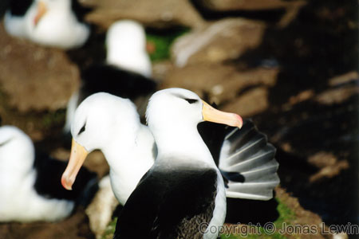
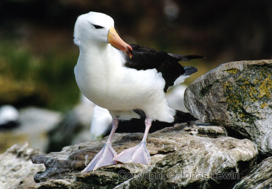
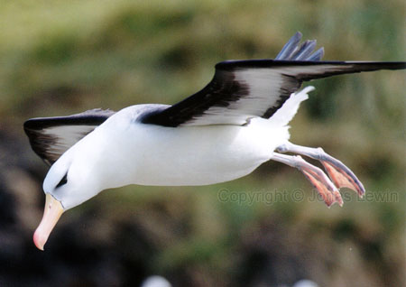
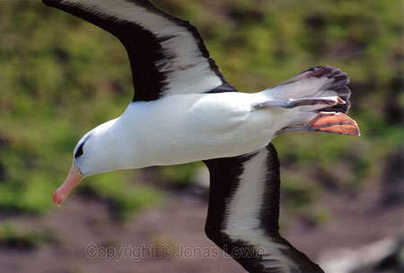
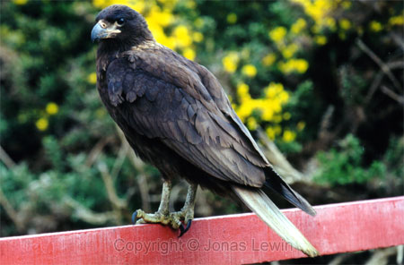
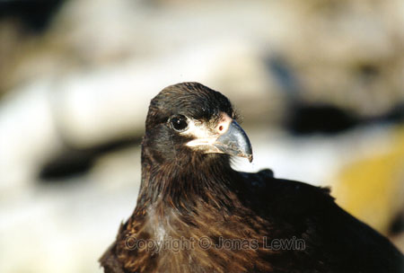

|
Black Browed Albatrosses
These
lovely birds are nesting on the Falkland Islands. They love their windy
islands, which enables them to take of with no effort.
 Landing is another matter. They slowly approaches their landing spot, and then gently gently descends. Just before landing, they have to retract their enormous wings. (Let's face it, there are not many landing spots that have free space for their 3 meter wings.) During the retraction, they loose their ability to gracefully maneuver in the air. So they (not so gracefully) crash land.
This bird is searching below for a nice place to land, and in the meanwhile
he is almost perfectly still in the air.
 Striated Caracara
At
Saunders Island, these birds where awaiting our arrival. They kept their
distance (or we kept our distance), and they didn't seem too afraid of
humans. They almost looked like they wanted to be the pets of the natives.
Constantly
watching us. |